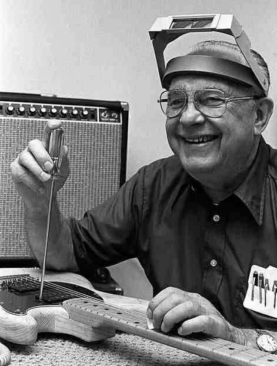

Founder: Leo Fender
Born: August 10, 1909, Anaheim, CA
Died: March 21, 1991, Fullerton, CA
Clarence Leonidas Fender better known as Leo Fender was an electronics innovator who started a radio repair service. Then in the late 40s he begain working on a guitar that was electric. He created one of the most popular guitars in history the Stratocaster.
The Evolution of Fender
1930s–40s: Leo Fender opens Fender’s Radio Service, repairing amps and radios.
1950s: The Esquire and Telecaster come out and the Precision Bass is born.
1960s–80s: Jazzmaster and Jaguar expand the lineup; Fender is sold to CBS.
1980s–Present: The company regains independence under Bill Schultz, refocuses on quality, and revives its classic designs.